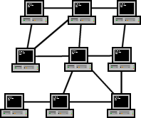

La primera computadora electrónica, fue la ENIAC. Es importante
este hecho histórico ya que fue el nacimiento de la computadora
en la que más tarde surgiría la necesidad de compartir recursos.
Fecha de introducción: 15 de febrero de
1946.
El periodo más largo de operación del ENIAC sin un fallo fue
de casi cinco días. Además requería la operación manual de
6000 interruptores y cuando se requerían modificaciones de
software, llevaba semanas de instalación.
50 - 60 Llegada de los mainframes.
Primera época de uso comercial.
Las instrucciones de programa estaban en tarjetas perforadas
o en cinta mediante perforaciones. Si te equivocabas, había
que comenzar de nuevo.
La tarjeta perforada o simplemente tarjeta es
una lámina hecha de cartulina que contiene información
en forma de perforaciones según un código binario
Sala con mainframes IBM.
60 - 70 Minicomputadoras.
Máquinas que ya no necesitaban aire acondicionado. Además que
aparece el concepto de tiempo compartido, se refiere a compartir
de forma concurrente un recurso computacional (tiempo de
ejecución en la CPU, uso de la memoria, etc.) entre muchos
usuarios por medio de las tecnologías de multiprogramación y la
inclusión de interrupciones de reloj por parte del sistema
operativo.
Aparece el microprocesador (como un chip de silicio).
Arreglos de muchos transistores conforman los microprocesadores.
Además aparece el primer sistema operativo, capaz de realizar tareas
sencillas, todo esto fue base para el desarrollo de las primeras redes
de computadora.
70 - 80 Conmutador de datos.
> Permitía el acceso a impresoras (un usuario a la vez).
> Proporcionaba a los usuarios una conexión de puerto serial o
en paralelo.
La PC tenía que mandar una secuencia de carácteres para indicar
que ya había terminado.
> 80's Tipos de redes.
Tipos de redes informáticas según su alcance.
LANs (Red de área local).
Es la que todos conocemos y la que suele instalarse en
la mayoría de las empresas, tanto si se trata de un
edificio completo como de un local. Permite conectar
ordenadores, impresoras, escáneres, fotocopiadoras y
otros muchos periféricos.
WANs (Red de área amplia).
Son las que suelen desplegar las empresas proveedoras
de Internet para cubrir las necesidades de conexión de
redes de una zona muy amplia, como una ciudad o país.
Red de redes :).
CANs (Red de área de campus).
Usada en un campus o base militar.
MANs (Red de área metropolitana).
Abarcan espacios metropolitanos mucho más grandes. Son
las que suelen utilizarse cuando las administraciones
públicas deciden crear zonas Wifi en grandes espacios.
También es toda la infraestructura de cables de un
operador de telecomunicaciones para el despliegue de
redes de fibra óptica. Una red MAN suele conectar las
diversas LAN que hay en un espacio de unos 50
kilómetros.
HANs (Red de área doméstica).
Red casera que conecta diferentes dispositivos digitales.
Aparecen los siguientes conceptos en el mundo de las redes:
Topología.
Protocolo.
Arquitectura de una red.
Nodos (cada computadora de la red).
Servidores (computadoras y dispositivos que tienen
recursos para una web).
A principios de los 90's Tim Berners-Lee crea la Web.
> 80's Topologías.
Disposicion geométrica de los componentes físicos y lógicos
de una red computacional.
Bus:
Arquitectura lineal, fácil de instalar y baratas.
Anillo:
Cada nodo tiene dos nodos adyacentes |
Token Ring/IEEE 802.5 y FDI.
Estrella:
Alta fiabilidad, en el centro hay un HUB o Switch.
De árbol:
Ramificaciones con múltiples nodos.
Malla:

Muchas interconexiones.
Actualidad: Modelo OSI (interconexión de sistemas abiertos).
Define una estructura para implementar protocolos en
siete capas,
+ La capa física, la más baja del modelo OSI,
se encarga de la transmisión y recepción de una
secuencia no estructurada de bits sin procesar a
través de un medio físico.
+ La capa de vínculo de datos ofrece una
transferencia sin errores de tramas de datos desde un
nodo a otro a través de la capa física.
+ La capa de red controla el funcionamiento de
la subred, decidiendo qué ruta de acceso física deberían tomar los
datos en función de las condiciones de la red, la
prioridad de servicio y otros factores.
+ La capa de transporte garantiza que los
mensajes se entregan sin errores, en secuencia y sin
pérdidas o duplicaciones
+ La capa de sesión permite el establecimiento
de sesiones entre procesos que se ejecutan en
diferentes estaciones.
+ La capa de presentación da formato a los
datos que deberán presentarse en la capa de aplicación.
Se puede decir que es el traductor de la red.